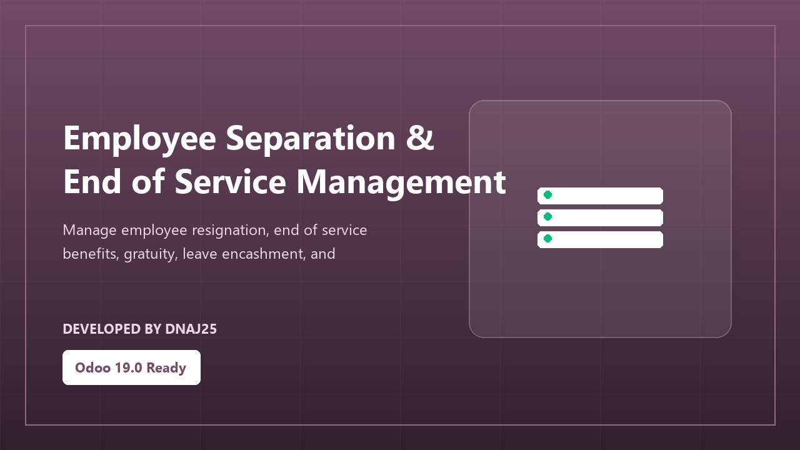

Manage employee resignation, end of service benefits, gratuity, leave encashment, and final settlement calculations.
From resignation to final payment - all in one workflow.
Employee or HR creates a separation request with reason and last working date.
Automatic calculation of gratuity, leave encashment, and other end of service dues.
Manager and HR approval before any final payment is processed.
Generate the complete final settlement document for payroll processing.
Automatically calculate all end of service entitlements based on years of service, salary, leave balance, and company policy - with full audit trail.
| Feature | What it provides |
|---|---|
| Separation Request | Structured offboarding request with reason and dates. |
| Gratuity Calculation | Automatic gratuity based on service years and salary. |
| Leave Encashment | Convert unused leave balance to cash payment. |
| Approval Workflow | Manager and HR approval before settlement. |
| Final Settlement | Complete settlement document for payroll. |
Compliant, accurate, and fully tracked offboarding management.